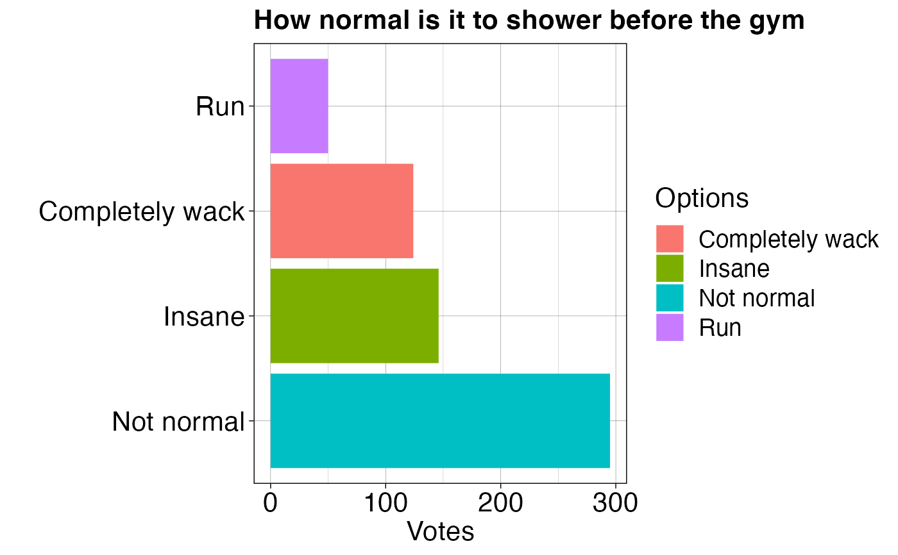

Visualize Poll Data
visualize_poll.RdReturn a bar chart of poll responses. Option to include additional information in the text box if at least one of (1) show_user, (2) show_duration, and (3)show_date is set to True.
Arguments
- poll_obj
A list containing poll responses from get_poll_by_id()
- show_user
A logical to display user
- show_duration
A logical to display duration of the poll
- show_date
A logical to display end date of the poll
Value
A bar chart containing poll responses including additional information if at least one of
show_user
show_duration
show_date was set to TRUE
Examples
poll_obj <- list()
poll_obj['text'] <- 'How normal is it to shower before the gym'
poll_obj['duration'] <- as.integer(1440)
poll_obj['date'] <- '2022-01-12T23:08:22.000Z'
poll_obj['poll options'] <- list(data.frame(
'position' = as.integer(c(1, 2, 3, 4)),
'label' = c('Not normal', 'Completely wack', 'Insane', 'Run'),
'votes' = as.integer(c(295, 124, 146, 50))))
poll_obj['user'] <- 'RadaNotSay'
poll_obj['total'] <- as.integer(615)
visualize_poll(poll_obj, show_duration=TRUE)
#> [1] "The duration of the poll in hours: 24h"
